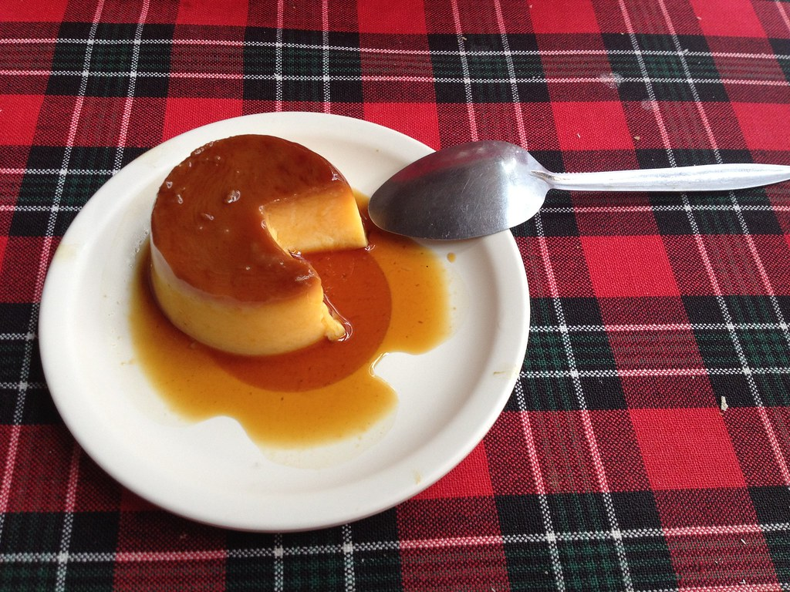

Vietnamese Creme Caramel Flan

Description
Banh flan is the Vietnamese version of the French creme caramel and is known as flan in other regions. It is delicate and soft and covered in a layer of sugary caramel. Vietnamese banh flan uses condensed or evaporated milk and is steamed rather than baked in an oven.
This creme caramel flan has the perfect balance of sweetness, the most delicate and velvety texture, and is possibly the best flan that has ever existed. This flan recipe is so ridiculously delicious that it was impossible for me to not share it with you.
Ingredients
This Vietnamese creme caramel flan only requires 6 ingredients that you can find at your local grocery store.
- Large Eggs: make sure to use large eggs at room temperature for this recipe. The eggs are what create the silky custard texture of this flan.
- Evaporated Milk: evaporated milk is a milk that has evaporated about 60% of the water content. The result is a creamier, thicker milk. This will result in a creamier custard.
- Water: the water slightly thins out the milk and also creates the amber caramel sauce
- Granulated Sugar: the granulated sugar creates the rich amber caramel and sweetens the custard
- Vanilla Extract: the vanilla extract is the main flavoring component to the custard
- Lemon Juice: the lemon juice is added to the caramel for a touch of acidity and flavor